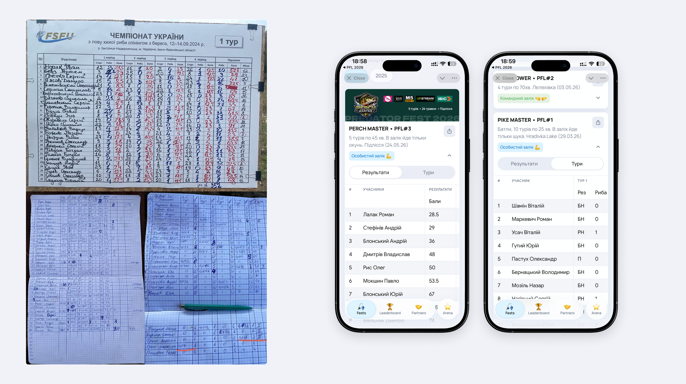
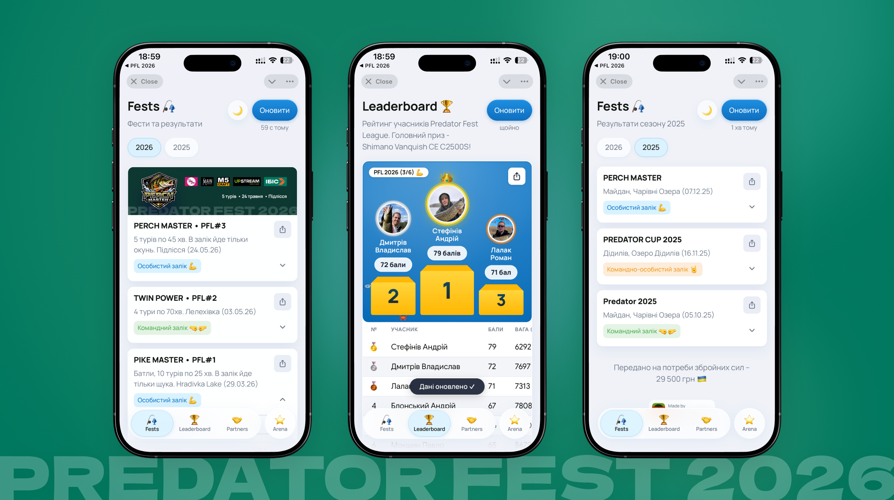
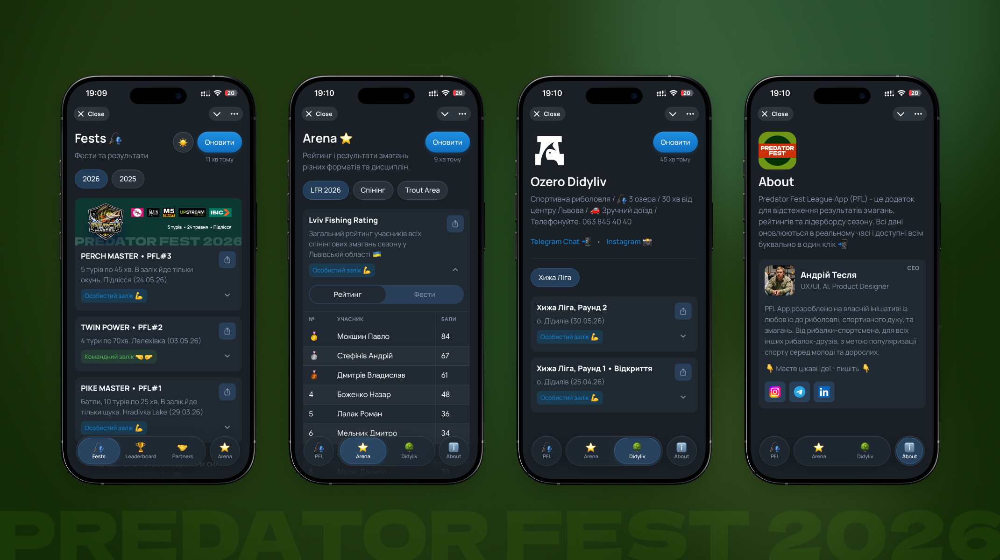
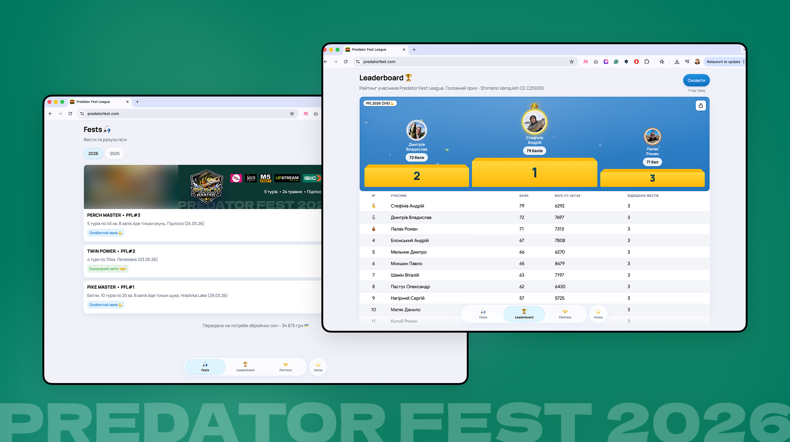
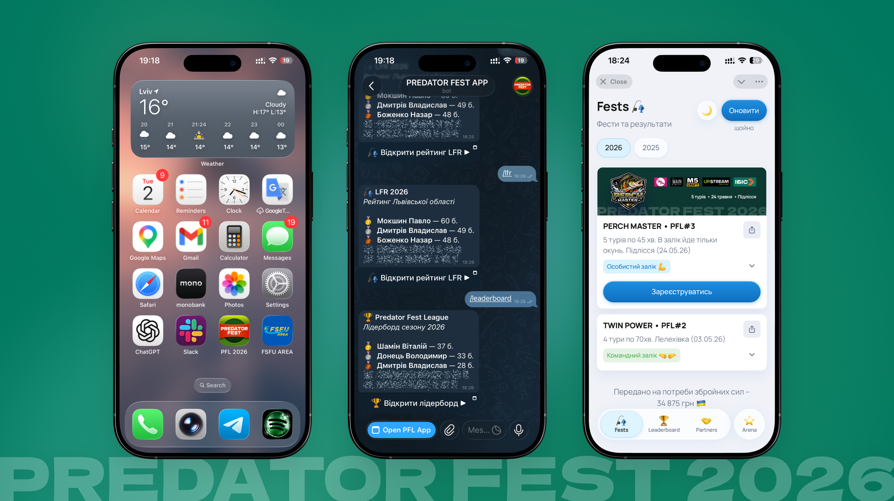

Project Overview
Live at predatorfest.com · tg: @predatorfest
Predator Fest League (PFL) is a competitive fishing league I founded in Lviv — solo, from scratch, as CEO and the only person behind the entire project. I noticed the same problem at almost every tournament — results scribbled on paper at the weigh-in, photographed once, dropped into a Telegram chat, and effectively lost forever.
I designed and built the PFL App from scratch — a Telegram Mini App and PWA that gives every participant instant access to live results, tournament standings, a full season leaderboard, and partner information. All data updates in real time directly from a Google Sheet. No backend, no database, no overhead.
The app has been live across multiple seasons, tracked 80+ participants, and helped the community raise 64,375 UAH for Ukraine's armed forces through competition entry fees.
64,375 UAH raised for the Armed Forces of Ukraine across all PFL events
The Problem I Kept Running Into
After moving to Lviv and getting seriously into competitive spin fishing, I noticed the same friction at practically every second tournament. The system technically worked — but only for the organiser holding the pen.
Scores were written by hand on paper during the weigh-in, then photographed and dropped into a Telegram group. If you missed the message or the chat was busy, your result was gone. Season standings lived in a Google Sheet that only one person had access to.
This is exactly the kind of problem familiar to anyone who works in product: the system technically works, but using it is genuinely uncomfortable.
The data already existed — it just lived in the wrong place. The fix wasn't a new data model, it was a better interface over data that was already there.
Results on paper
Scores written at weigh-in, photographed once, shared in chat — then effectively impossible to find.
Data scattered in chats
Part in Telegram messages, part in photo albums, part in someone's private spreadsheet.
No quick lookup
Checking your season standing required scrolling through weeks of chat history.
Manual counting errors
Complex scoring rules — place points + bonus points — led to frequent miscalculations by hand.

Why a Telegram Mini App?
The fishing community lives in Telegram. A native iOS/Android app would mean App Store submissions, installs, updates, and a completely separate context from where people already communicate. A Telegram Mini App opens with one tap inside the chat they use every day — no install, no friction, native on mobile by default.
My choice was about meeting users exactly where they already are — a core UX principle — while keeping the architecture simple enough to build and maintain solo.
Google Sheets as DB
Organisers enter results in a familiar spreadsheet. Zero learning curve, zero new tools to adopt.
Apps Script API
A thin Google Apps Script layer reads the sheet and exposes a clean JSON endpoint — an instant backend.
Vanilla JS front-end
No framework overhead. Fast initial load inside Telegram's Mini App webview — critical for mobile performance.
GitHub + CI/CD
Staging and production environments. Changes deploy automatically on push — same as professional engineering teams.
Interface Design
The visual identity — deep forest green with gold — comes directly from the brand materials I designed for Predator Fest events. It signals "outdoors, sport, serious competition" without a word. The interface is built around five core tabs, each solving a specific job-to-be-done for a participant standing at the water's edge on their phone.

Tournament Results
- Live individual & team standings per round
- Multi-year archive — 2025 and 2026 seasons
- Per-tournament breakdown: results, catches, placements
- Updates in real time as organiser enters weigh-in data
Season Rankings
- Points accumulated across all 6 season events
- Grand prize race — Shimano Vanquish 2500S
- Bonus point tracking: participation, BigFish, referrals
- Tiebreaker logic: wins → total weight across season
Multi-format Rankings
- Cross-format standings across different competition types
- Perch, Pike, and multi-species event tracking
- Separate views for individual vs team formats
Venue-specific Tab
- Dedicated section for Ozero Didyliv venue results
- Local rankings and historical catches
- Real-time updates from the same sheet infrastructure

The Scoring System Behind the App
One of the real design challenges was making a genuinely complex scoring model feel transparent and simple to understand. The PFL season uses placement-based points across 6 events, with multiple bonus point categories and a tiebreaker chain.
Built Solo, Built to Last
The entire app was designed, built, and deployed by me — a product designer who used AI-assisted development to go from idea to production without a dedicated engineering team. This was a deliberate experiment in what a designer can ship independently in 2024–2025.
Google Sheets
The "database". Organisers use it like a familiar spreadsheet — no new tools, zero training, zero errors from manual re-entry.
Google Apps Script
Acts as a lightweight API layer. Reads the sheet, applies scoring logic, returns clean JSON to the front-end.
Vanilla JS
No framework, no build step. Fast initial load inside Telegram's Mini App webview — critical for mobile performance.
GitHub + CI/CD
Staging and production branches. Automated deploys on push — same workflow used by professional engineering teams.
Telegram Mini App
Native Telegram integration. Opens in one tap from the community channel — no install, no app store, no friction.
Progressive Web App
Also accessible at predatorfest.com — same codebase, works on any device or browser.


Impact
A real product, used by a real community, built by one person with a passion for fishing and product design.
Participants tracked across tournaments in the 2025–2026 seasons.
Growing community · Lviv & regionRaised for Ukraine's Armed Forces from competition entry fees across all events.
Sport with a purposeThat's all it takes to check live results during a tournament — from any device, any time.
vs. digging through chat history beforeWhat this project actually proves: a designer can ship.
- Identified a real problem from personal experience — then built the solution end-to-end
- Designed the full product: IA, visual identity, UI system, event brand materials — all consistent
- Shipped a working Telegram Mini App + PWA using AI-assisted development
- Maintained staging / production CI/CD — same workflow as professional engineering teams
- Iterated based on real feedback from an active community across multiple seasons
Next project
03 / 04 RentFlow Back to all work